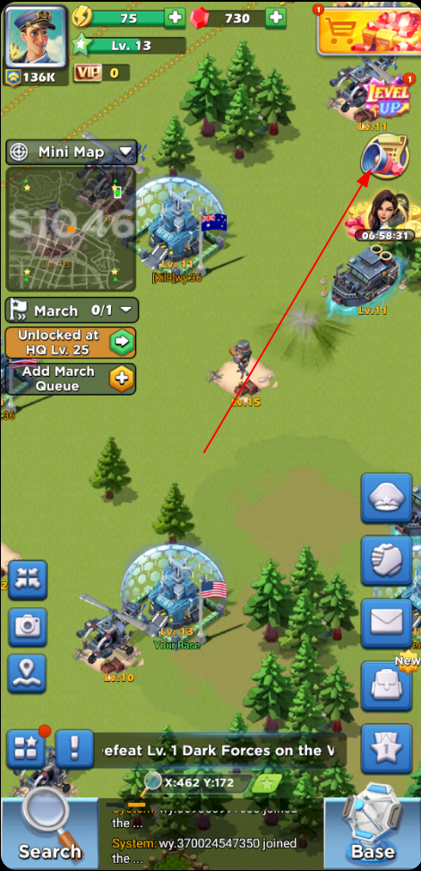
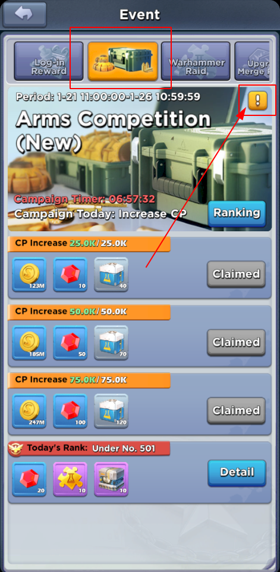

These are tasks that gives you rewards, they also have a ranking for each type which gives you more rewards the higher you rank. For new servers the schedule is random, every day a random contest is picked from 7 events available.
At some point the Arms Operation Events will settle into a stable schedule for each day. You can see the schedule information in the event panel (see screenshot).
 Pretty straight forward, the more units you train the more points you get.
Increase your Combat Power (CP), which can be done by upgrading HQ, training units, etc.. Considering the large gap of CP in this game, its hard (impossible?) to compete with high levels on this one.
Again pretty straight forward, the more Warhammers you kill the more points your get.
You can only defeat Warhammers if you are in an alliance by joining a rally against them.